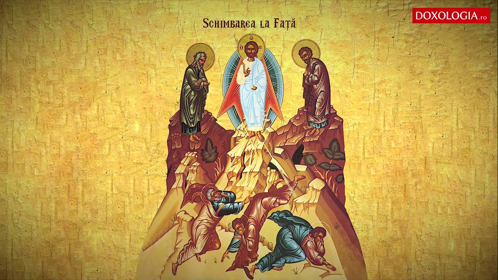

200+ întrebări pentru a pune o fată: cunoaște-o
- De ce nu slăbesc, fată? - Dilema veche
O fată a plecat de la domiciliul său din Caracal cu mai mult de 10 zile în urmă, anunţând că merge la un cunoscut în Craiova. Bunica fetei a anunţat dispariţia într-un moment care trezeşte suspiciuni. - Marius Tucă are o fată isteață și frumoasă. Cum arată și ...
fată s.f. 1 Persoană tânără de sex feminin, necăsătorită. Fată în casă = fată tânără, angajată ca femeie de serviciu într-o gospodărie.Fată bătrână (sau stătută) = fată trecută de vârsta măritișului și rămasă necăsătorită.(reg.) Fete (de) nune = fete care merg cu mirele după mireasă.Fete după masă = fete pe care le cheamă mireasa. - O fată de 16 ani a dispărut în 20 august din Caracal ...
Am recunoscut-o pe fată și am zis să vin la Poliție. Am făcut plângere. Fata nu mi-a zis nimic până acum. I-a fost frică și de-asta nu ne-a spus nimic și nici nu știu de la ce a pornit, dar am văzut că au bătut-o și pe acea fată sâmbătă. Ceva cumplit”, a spus tatăl fetei agresate în iulie. - Un nou caz de violenţă între adolescenţi în...
Devenisem, dintr-o fată ușor plinuță și complexată, o fată slabă care încerca să se adapteze noului ei corp. Însă mă adaptam și vremurilor, urmam turma, complexele îmi dispăruseră, aveam în sfîrșit încredere în mine. Atunci, ca și în vremurile de acum, valoarea individuală nu conta, nu conta că îmi plăcea să scriu ... - O fată pe cinste | Site oficial Netflix
Fată Jocuri Fată - Pagină 4 Joacă Jocuri Fete la Y8 Jocuroi. Încalță niște papuci, alege o ținută de purtat, sau învață să gătești o nouă rețetă. Atât de multe categorii pentru fete, inclusiv bebeluș și jocuri transformare. - fată - definiție și paradigmă | dexonline
Cum să cunoști o fată. A cunoaște dreptul sau orice fată poate fi dificil. Nu este ușor să intrați în contact cu cineva nou și să creați o legătură emoțională. În acest articol, am adunat peste 200 de întrebări grozave pentru a pune o fată. - Imagini terifiante! O fată de 13 ani a fost snopită...
Vezi oferta magazinului epantofi.ro â Peste 450 de mărci 50.000 de modele de pantofi, genți și accesorii Livrare și returnare gratuită - Fată de 14 ani, cumpărată de un bogătaÅŸ de 50 de ani. Mama ...
O minoră de 13 ani din Târgu Jiu a fost bătută cu bestialitate de alte patru fete, în timp ce altcineva, probabil un tânăr, filmează toată scena. După ce imaginile au apărut în spațiul public, poliția s-a autosesizat, a deschis o anchetă penală și deja a adus la audieri două dintre ... - Fată Jocuri Fată - Y8.COM - Pagină 4
O minoră de 14 ani, din Târgu Jiu, a fost reţinută pentru lovire sau alte violenţe, în urma celor două filmări care au apărut în spaţiul public şi în care două fete de 12, respectiv 13 ani sunt agresate de mai multe adolescente. - Noi imagini cu o fată de 12 ani, bătută în Târgu Jiu. Una ...
O fată pe cinste 2019 16+ 1 h 32 min Comedii După o despărțire venită din senin, Jenny, o jurnalistă de muzică, se pregătește de un nou început, dar și de o ultimă aventură cu prietenele sale apropiate.
PsyCat Games Petrecere Startere pentru conversații Jocuri Scan me Cel mai bun prieten test Creează-ți propriul test Cât de bine vă cunosc prietenii? Niciodată nu am Joaca acum Cunoaște-o
200+ întrebări pentru a pune o fată
Căutați o modalitate de a cunoaște fata viselor tale? Perfect! Am adunat peste 200 de întrebări pentru a pune o fată divizată în șase categorii diferite. Verificați-le și găsiți întrebările potrivite pentru situația dvs!
Startere pentru conversații👇
📖 Cuprins:
Cum să cunoști o fată Sfaturi pentru a obține fata care îți place 50 de întrebări pentru a pune o fată 25 de întrebări pentru prima dată pentru a pune o fată 25 de întrebări de flirt pentru a pune o fată 25 de întrebări pentru a pune o fată să o cunoască 25 de întrebări amuzante pentru a pune o fată 25 de întrebări murdare pentru a pune o fată 25 de întrebări profunde pentru a pune o fată Bonus: 21 Întrebări joc pentru a pune o fatăCum să cunoști o fată
A cunoaște dreptul sau orice fată poate fi dificil. Nu este ușor să intrați în contact cu cineva nou și să creați o legătură emoțională. În acest articol, am adunat peste 200 de întrebări grozave pentru a pune o fată. Puteți găsi întrebări profunde, flirte, amuzante și chiar întâmplătoare, pentru a pune o fată care vă place. Aceste întrebări vă vor ajuta cu siguranță să veniți cu un pas mai aproape de fata viselor voastre. Pentru că știi ce? Fetele sunt doar oameni. Chiar și cele mai frumoase. Doar fi curajos, uită-te la întrebările noastre bune pentru a pune o fată și începe să o cunoști!
Sfaturi pentru a obține fata care vă place
Fii un domn! Poți crede că este la modă veche, dar este adevărat: fiecărei fete le plac domnii. Doar acționează drăguț și politicos și nu o grăbi în nimic. Ascultă-o! Da, este chiar atât de simplu. Doar ascultă-i poveștile, arată interesul pentru gândurile și opiniile ei. Nu doar în privirile ei. Fii sincer! Amintiți-vă întotdeauna că creați o legătură specială în timp ce împărtășiți cele mai profunde dorințe, speranțe și chiar temeri. Fii sincer cu povestea ta. Fie le place, fie nu este fata potrivită pentru tine. Păstrează-i secretele! Aceste întrebări pentru a pune fetei visului tău sunt private. Rețineți că nimeni nu ar trebui să audă răspunsurile decât tu și ea.Colecția noastră de peste 200 de întrebări pentru a pune o fată
Colecția noastră de peste 200 de întrebări pentru o fată este plină de întrebări grozave pentru a începe o conversație cu fata care îți place. Le-am împărțit în șase categorii diferite. La început, am colectat 50 de întrebări pentru a pune o fată ca încălzire. Dacă sunteți în căutarea unei modalități de a o cunoaște mai bine, vă recomand lista cu 25 de întrebări pentru a o cunoaște, precum și listele cu întrebări amuzante și profunde de a pune o fată. Cele 25 de întrebări pentru prima întâlnire pentru a-i pune unei fete sunt, de asemenea, ideale pentru a o cunoaște mai bine și o bază bună pentru discuții la prima întâlnire. Dar, desigur, am colectat și câteva întrebări sexy pentru a condimenta lucrurile: Puteți găsi, de asemenea, o listă cu flirty și o listă cu întrebări murdare pentru a pune o fată. Sunt făcute exclusiv pentru nopți calde.
50 de întrebări pentru a pune o fată
Ce îți place să faci, asta nu este în mod tradițional considerat feminin? Cine este personajul tău preferat de ficțiune și de ce? Mai degrabă știți fiecare limbă sau știți să vorbiți cu animalele? Unde te vezi trăind când te retragi? Mai degrabă obțineți sughițul de fiecare dată când râdeți sau strângeți de fiecare dată când tușiți? Cum îți place cafeaua ta? Ce combinații de fixare face burrito-ul tău perfect? Care sunt primele trei lucruri pe care doriți să le realizați înainte de a muri? Care este cea mai mare minciună pe care ți-a spus-o cineva? Ați prefera să aveți ochi care să poată capta totul pe video sau pe urechi care să înregistreze toate sunetele? Ce este un lucru care te relaxează total atunci când ești stresat? Care este povestea reală din spatele ultimei postări pe Instagram? La ce vârstă ați început să savurați o cafea? Crezi că bărbații mai în vârstă sunt sexy? Mai degrabă v-ați tăia unghiile prea scurt de fiecare dată când le tăiați sau nu veți mai putea deține niciodată un animal de companie? Când erai copil, care părea cel mai bun lucru despre a fi un adult? Mai degrabă veți obține o tăietură de hârtie între degete de fiecare dată când faceți o pagină sau vă mușcați limba de fiecare dată când mâncați mâncare? Câte telefoane ai rupt sau ai pierdut? Care celebritate feminină este cel mai mare model de rol? Care este părerea ta despre bărbații care refuză să folosească prezervative? Aveți un pseudonim? Cum ai obținut-o? Când a fost ultima dată când râdea atât de tare încât ai plâns? Ai prefera să fii cea mai puternică persoană din lume sau cea mai rapidă persoană din lume? Pentru ce ești prea bătrân, dar încă te bucuri? Care este ceea ce v-ați stresat cu adevărat, s-a dovedit a fi o problemă mare? Ai o poveste proastă sau amuzantă pe care vrei să o împarți? Care este vacanța ta preferată și de ce? Ce carte ai citit de mai multe ori? Cum credeți că v-ați schimbat în ultimii ani? Ce crezi că oamenii își asumă automat despre tine atunci când te privesc? Care este definiția dvs. de intimitate emoțională? Ai sărutat vreodată o fată? Aveți citate preferate de la oameni de succes? Cum ai numi biografia ta? În ce joc sau univers de film ți-ar plăcea cel mai mult să trăiești? Cu ce ​​accent este cel mai plăcut să auzi limba vorbită? Care a fost prima ta călătorie în străinătate? Èši-a plăcut? Ce film ai văzut de mai mult de șapte ori? Ce tip de persoane nu îți place? Care este burgerul tău perfect? Cine este faimos pentru talentul lor, dar chiar nu ar trebui să fie? Crezi că chel este sexy? Care este cel mai ridicol lucru pe care l-ai convins pe cineva că este adevărat? Ce animale de companie ai avut în timp ce crești? Numește orice 5 lucruri pe care le urăști și spune-mi de ce. ​​Aș dori mai degrabă ca întregul corp să devină albastru atunci când sunteți nervos sau transpirați profund peste tot când sunteți nervos? Care este cel mai frumos cuvânt pentru tine? Care este cea mai bună decizie pe care ai luat-o vreodată? Există o vârstă în care credeți că a fi virgin ar fi penibil? Care este cel mai bun sfat pe care vi l-a dat bunică vreodată?25 de întrebări pentru prima dată pentru a pune o fată
Care sunt cele mai mari puncte slabe ale tale? Care sunt unele lucruri neîmplinite în viața ta? Cine este cea mai norocoasă persoană pe care o cunoști? Ce părere aveți despre schimbările climatice? Ai mai dori un tip dacă ar fi mult mai scurt decât tine? Care sunt unele dintre lucrurile pe care le-ai dori un tip înainte de a te întâlni? Despre ce puteți vorbi toată ziua? Există ceva ce ai visat să faci de mult timp? Ce părere aveți despre textul dublu? Care este un lucru care se activează total? Care a fost cea mai bună masă pe care ai mâncat-o vreodată? Care este ultimul vis pe care ți-l poți aminti? Ai întâlni doi tipi în aceeași zi? Care este numele tău ideal pentru un copil? De cine ești cel mai apropiat în familia ta? Dacă ar fi să scrii o carte, ce fel ar fi? Cum petreci o sâmbătă seara tipică? Care este melodia ta preferată? Care este un loc de muncă pe care nu l-ai face niciodată? Ești o persoană de pisică sau o persoană de câine? Ce te face să te simți cel mai viu? Dacă ai câștiga la loterie mâine, care ar fi primul lucru pe care l-ai face cu banii? Cine a fost prima ta zbuciumare? Care este durata celei mai lungi relații romantice? Care este un lucru care este o dezactivare totală?25 de întrebări de flirt pentru a pune o fată
Credeți că este posibil să ne întâlnim într-o viață anterioară? Ce vrei în viitorul tău? Câți oameni ai sărutat? Ce părere aveți despre căsătorie? Care este ora ta preferată din zi pentru a face sex? Cum a fost ziua ta? Ce vrei din această relație? Crezi în dragoste la prima vedere? Care este ideea ta despre o întâlnire romantică perfectă? Cum vrei să fie viitorul tău soț? Cum te simți cel mai iubit? Ați înșelat vreodată pe cineva? Care este cea mai sălbatică fantezie a ta? Ce te atrage de oameni? Cum ai salva lumea? Cum s-a încheiat ultima relație? Ați merge la o întâlnire cu mine? Ce vrei să obții în viitorul tău? Ați fost înșelat vreodată? Crezi că sunt atractiv? Care este data ta de vis noaptea? Ce crezi despre sexting? Unde considerați că locurile bune pentru cupluri sunt romantice? Care este ideea ta de vacanță romantică? Care sunt sentimentele tale față de relațiile deschise?25 de întrebări pentru a cere unei fete să o cunoască
Ce celebritate ai dori să întâlnești și de ce? Dacă ar fi să cântați karaoke, ce melodie ați alege? Aș dori mai degrabă un abonament pe viață la Netflix sau un card cadou nelimitat la Starbucks? Crezi că ai putea fi cu cineva care este profund religios? Care este cel mai bun lucru despre a fi singur? ÃÈ›i place să te trezești devreme sau să rămâi târziu? Ați avut experiențe de moarte aproape? Ar trebui ca medicamentele să fie legale? Care sunt motivele pentru care doriți să vă căsătoriți? Care a fost cea mai bună aniversare pe care ai avut-o vreodată? Ai bănuit vreodată că ești homosexual? Cum crezi că au fost construite piramidele? Dacă ai rămâne însărcinată astăzi, ce ai face? Ați călcat vreodată pe cineva? Care este mirosul tău preferat? Când citiți ziarul, în ce secțiune săriți imediat? Care este cel mai rău și mai bun lucru despre a fi femeie? Ați întâlni cineva care nu are cărți în casa lor? Ce îți place pentru tine? Cum știi când ești îndrăgostit? Mai degrabă ai avea un GPS cu semnal slab sau trebuie să folosești doar hărți? Ce părere aveți despre feminism? Ai întâlni vreodată o persoană nevăzută? Aveți dependență? Dacă ar trebui să redenumiți, ce nume ați alege?25 de întrebări amuzante pentru a pune o fată
Care a fost cel mai jenant moment al vieții tale? Care este cel mai ciudat lucru pe care l-ai consumat de mic? Mai degrabă ar fi sărutat o cobră sau sărutat o meduză? Din ce seriale TV realitate ți-ar plăcea să faci parte? Dacă ai putea arunca o persoană, cine ar fi? Ați prefera să mâncați paste sau pizza? Care a fost cel mai ciudat obicei pe care l-ai avut ca copil? Care este cel mai ciudat vis pe care l-ai avut vreodată? Mai degrabă nu veți putea niciodată să faceți un ochi bun de fum sau niciodată să nu puteți face un contur bun? Ce vârstă simțiți acum și de ce? Care este cea mai rea combinație alimentară pe care ți-o poți imagina? Mai degrabă ați cânta la pian sau la chitară? Care este cel mai prost show TV / film pe care l-ai vizionat vreodată? Ce combinație de arome este cam ciudată, dar îți place cu adevărat? Mai degrabă ai începe să fumezi sau să bei? Care a fost momentul tău cel mai jenant în școală (până acum)? Dacă ai fi o fantomă, cum ai bântui? Ce ai făcut greșit în cea mai mare parte a vieții tale și abia de curând ai aflat calea potrivită de a o face? Mai degrabă ați gătit sau curăța mai târziu? Ce ai aduce pe o insulă deșertă dacă ai putea aduce doar trei lucruri? Mai degrabă ai câștiga sau pierde 5 kilograme? Care a fost prima ta experiență de beție? Mai degrabă cumpărați 10 lucruri de care nu aveți nevoie de fiecare dată când mergeți la magazin sau uitați întotdeauna 1 lucru de care aveți nevoie când mergeți la magazin? Care a fost cel mai rău lucru pe care l-ai gustat vreodată? Care este cel mai inutil lucru pe care l-ai învățat vreodată la școală?25 de întrebări murdare pentru a pune o fată
Ai făcut vreodată relații sexuale într-un loc interzis? Ce părere aveți despre jucăriile din dormitor? Care a fost cea mai bună experiență sexuală? Care este cel mai murdar gând pe care l-ai avut vreodată despre un străin total? Ce gânduri ai în timp ce te atingi? Ți-ai făcut vreodată ochii sau ai încătușat partenerul? Ai spune că ai fetișuri secrete? Care este modul tău preferat de a fi sedus? Ai avut vreodată un vis sexy? Cum arată standul tău ideal pentru o noapte? Dacă viața ta sexuală ar putea fi descrisă în înghețate, ce fel de înghețată ar fi? Care este cel mai ciudat lucru la care te-ai gândit în timp ce te-ai atins pe tine? Care este cel mai bun lucru pe care îl pot face pentru tine în pat? Care este cel mai murdar text pe care l-ai trimis sau primit? Care este lucrul tău preferat despre un quickie? Ce este o fantezie obraznică pe care o ai despre mine? Cum crezi că ar fi o orgie? Dacă ai putea face cu vreun personaj fictiv, cine ar fi? Ce fac eu pentru a vă transforma cel mai mult? Ce poziție sexuală ați dori să încercați? Ce faci când devii excitat în public? Care este tehnica ta preferată de sex oral? Ce părere aveți despre mări? Dacă te-am prins să te masturbezi, ai continua, să ceri ajutor sau să te oprești și să te prefaci că nu? Există ceva ce nu vei face în pat?25 de întrebări profunde pentru a pune o fată
Dacă ai avea puterea de a citi mintea cuiva, cine ar fi? Care este cel mai important lucru pe care l-ai învățat în viață? Ai ucide pe cineva? Crezi în Dumnezeu? Crezi că există o viață plină de viață? Credeți că există o diferență între a face sex și a face dragoste? Ai avut vreodată să pierzi pe cineva apropiat? Cum crezi că se va sfârși lumea? Mai degrabă ați primi 5.000 de dolari în fiecare săptămână pentru tot restul vieții, sau tu și cel mai bun prieten primiți 1.000 de dolari pentru tot restul vieții? Ai prefera să fii fericit sau bogat? Crezi că există cerul și iadul? Ce a fost o dată când ați ieșit cu adevărat din zona de confort? Dacă ai putea trăi în orice perioadă a istoriei, când ar fi și de ce? Cum ar fi casa ta de vis? Cine este cea mai bună persoană din lume? În ce epocă ai alege să trăiești dacă ai putea? Ai vreo insecuritate în viața ta? Pentru ce ești cel mai recunoscător? Mai degrabă ați descoperi un nou element al mesei periodice sau a câștiga aur la Jocurile Olimpice? Cum te descurci cu situații stresante? Ai prefera să joci un ticălos sau un erou într-un film? Ce aduce întotdeauna un zâmbet pe față? Unde te vezi în 5 ani? Mai degrabă veți avea vecini răgușiți sau vecini zgomotoși? Crezi într-o putere mai mare?Bonus: 21 de întrebări joc pentru a adresa unei fete
Jocul ”21 Întrebări joc†este un joc binecunoscut pentru a cunoaște oameni noi. Jocul de început al conversației te ajută să aprofundezi o relație cu cine vrei. Dacă sunteți interesat, aruncați o privire la întregul articol:
21 Joc de întrebări
Ce ai face dacă o fată ți-ar cere numărul și te-ar fi lovit? De ce crezi că visăm? Care este orașul tău preferat? Ai prefera să bei ceai sau cafea? Ce te face nesigur? Crezi în extratereștri? Există ceva ce ai visat să faci de mult timp? Dacă ai fi băiat pentru o zi, care este primul lucru pe care l-ai face? Care sunt părerile tale despre ce se întâmplă după ce mori? Ați prefera să mâncați carne sau pește? Care este ideea ta de un loc perfect pentru luna de miere? Ați prefera să mergeți la schi sau la înot? Ce actriță te-ar juca într-un film despre viața ta? Cum ți se pare dragostea? Cum te-ai întâlnit cu cel mai bun prieten? Care este super-puterea pe care vrei să o ai cel mai mult? Dacă ar trebui să redenumiți, ce nume ați alege? De unde doriți să cumpărați o casă? Ce emisiuni TV ai privit când erai copil? Ai prefera să trăiești fără electricitate sau fără cel mai bun prieten? Ce crezi despre a avea copii?âœï¸ 10 iunie 2020
AcțiuneUrmează-ne:
@psycatgames PsyCat Games PsyCat Games PsyCat Games ✉ï¸Dacă v-a plăcut acest conținut, ar trebui să vă alăturați newsletter-ului nostru:
🔥 Popular acum
Verificați familia și prietenii
Cine mă cunoaște mai bine întrebări
Chestionează-ți părinții despre cine te cunoaște mai bine. Fă-ți frații să dezbată despre ce este mâncarea ta preferată. Această activitate distractivă este o modalitate mișto de a afla care dintre prietenii tăi știu gemul tău preferat, hainele, vremea și orice altceva despre tine.
👉 Citeste mai mult
Startere pentru conversații
Indiferent dacă sunteți la o petrecere care vorbește cu cineva pe care tocmai l-ați întâlnit sau că petreceți timp cu prietenii pe care nu i-ați văzut de ceva vreme, a veni cu un bun început de conversație, care nu este doar o discuție plictisitoare poate fi o luptă. Când începeți o discuție cu cineva, doriți să fie interesant, insightful și distractiv.
Intrebari pentru a-ti pune prietenul
Adâncește-ți relația
Lucruri despre care să vorbim
1000+ idei grozave pentru o conversație
Subiecte despre care să vorbim
Găsiți un subiect de conversație
Intrebari pentru cupluri
100 de întrebări de relație pentru cupluri
Cum să vă spun dacă o fată vă place
Este în tine? 25+ semne
Cât de bine mă cunoști? Întrebări
Cel mai bun test de prietenie
Startere pentru conversații Pagina principala Revistă Startere pentru conversații 200+ întrebări pentru a pune o fată CăutareNiciodată nu am
Jocul clasic de petrecere, Niciodată nu am avut - acum pentru telefonul tău.
DescarcaStartere pentru conversații
Indiferent dacă sunteți la o petrecere care vorbește cu cineva pe care tocmai l-ați întâlnit sau că petreceți timp cu prietenii pe care nu i-ați văzut de ceva vreme, a veni cu un bun început de conversație, care nu este doar o discuție plictisitoare poate fi o luptă. Când începeți o discuție cu cineva, doriți să fie interesant, insightful și distractiv.
Citeste mai multJocuri de petrecere de top 🔥
👉 Adevăr sau Provocare 👉 Niciodată nu am 👉 Cine e cel mai probabil sa 👉 Ai prefera? 👉 Kings Cup 👉 UNO ca joc de băutJocuri de băuturi pentru petreceri
👉 Niciodată nu am întrebări pentru adulți 👉 Cum se joacă Niciodată nu am 👉 Cum se joacă Adevăr sau Provocare 👉 Șarade pentru copii 👉 Șarade idei 👉 Jocuri de băut cărți pentru cupluriJocuri online
👉 Cel mai bun prieten test 👉 Niciodată nu am 👉 Adevăr sau Provocare OnlineCele mai noi jocuri
Adevăr sau Provocare Niciodată nu am Adevăr sau Provocare ExtremâœŒï¸ Misiunea noastră este să oferim conținut proaspăt și plăcut. De la jocuri mobile, aplicații și teste, la petreceri și jocuri de băut. Bucurați-vă! Contactează-ne .
🌠Deutsch í•œêµì–´ Bahasa Indonesia Norsk BokmÃ¥l ÄŒeÅ¡tina Hrvatski Dansk Ελληνική УкраїнÑька æ±‰è¯ æ—¥æœ¬èª Svenska Suomi Polski Magyar PуÑÑкий Türkçe Italiano Nederlands Français Português Español English © PsyCat Games, 2020 Despre PsyCat Games Business Termenii serviciului Politica de Confidențialitate